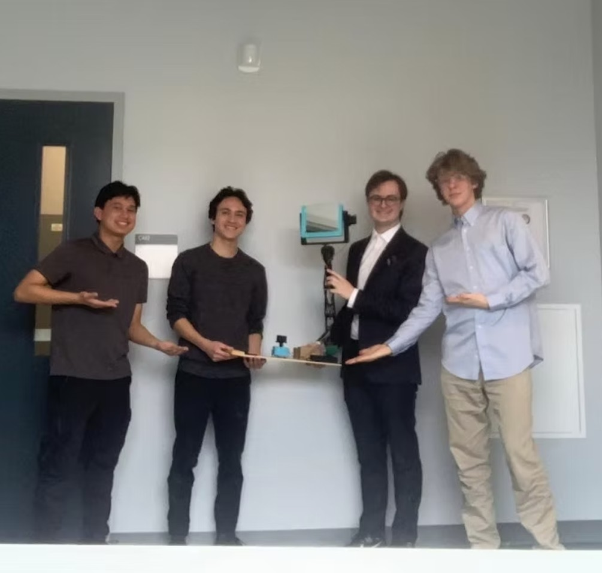
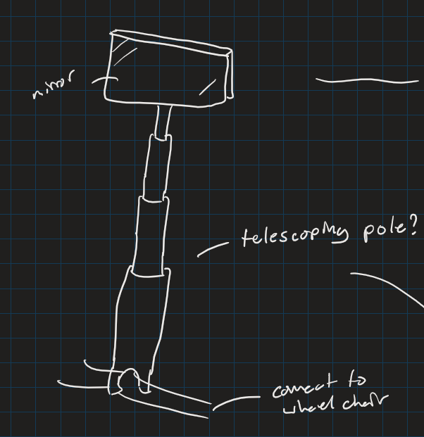
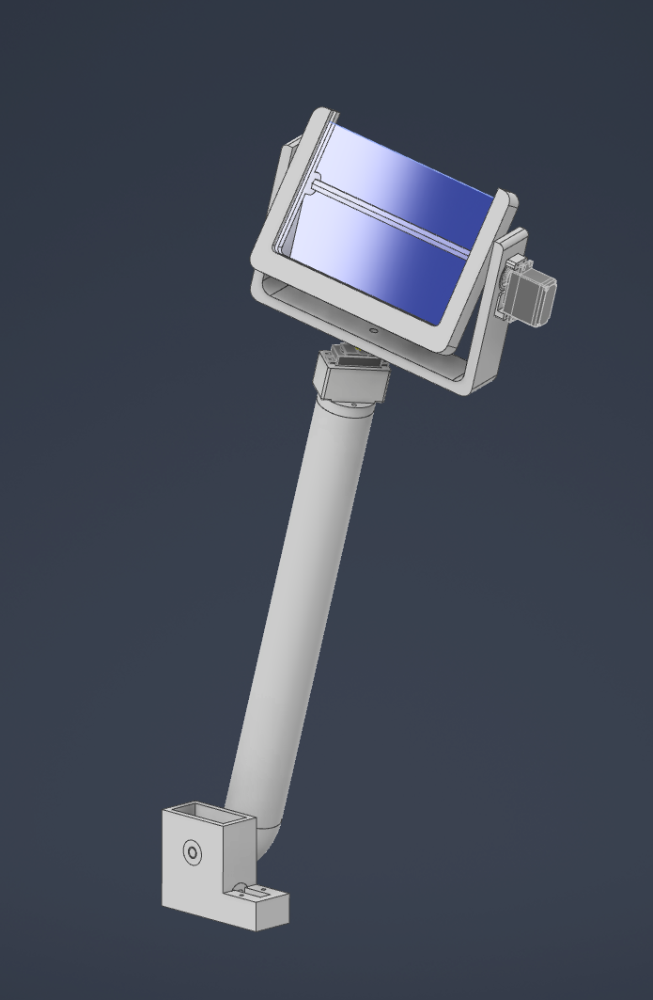
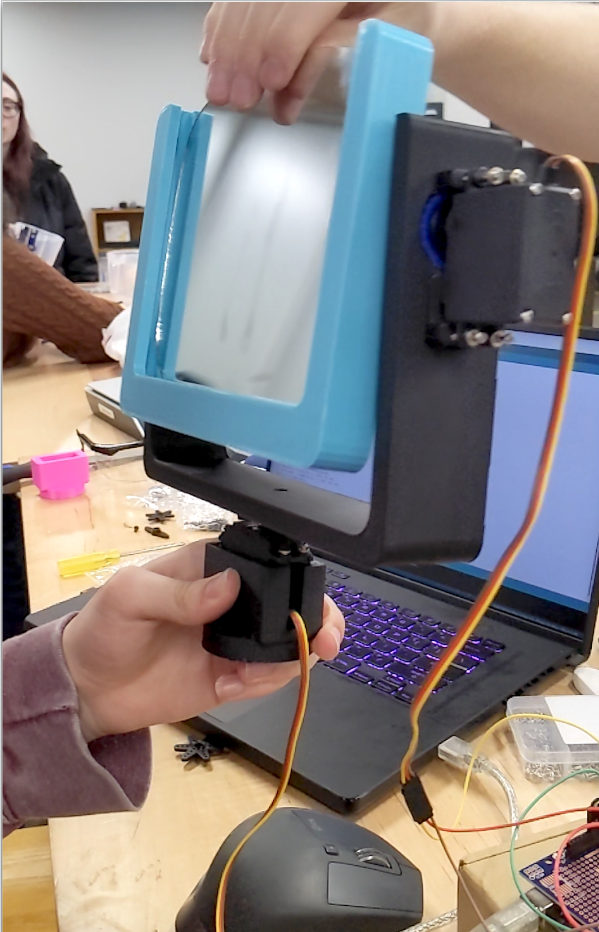
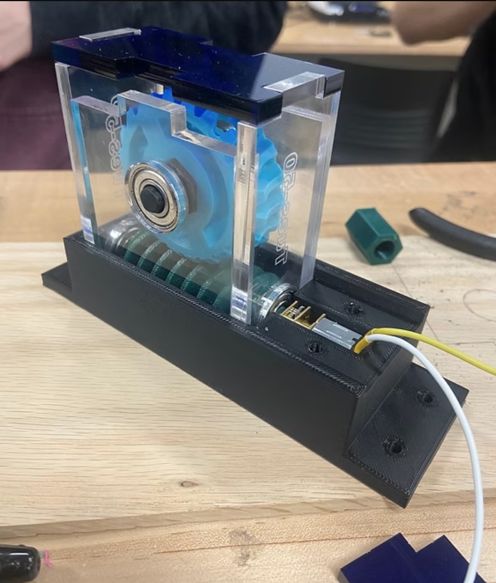
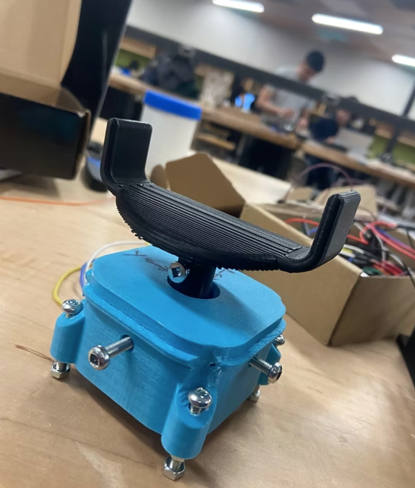
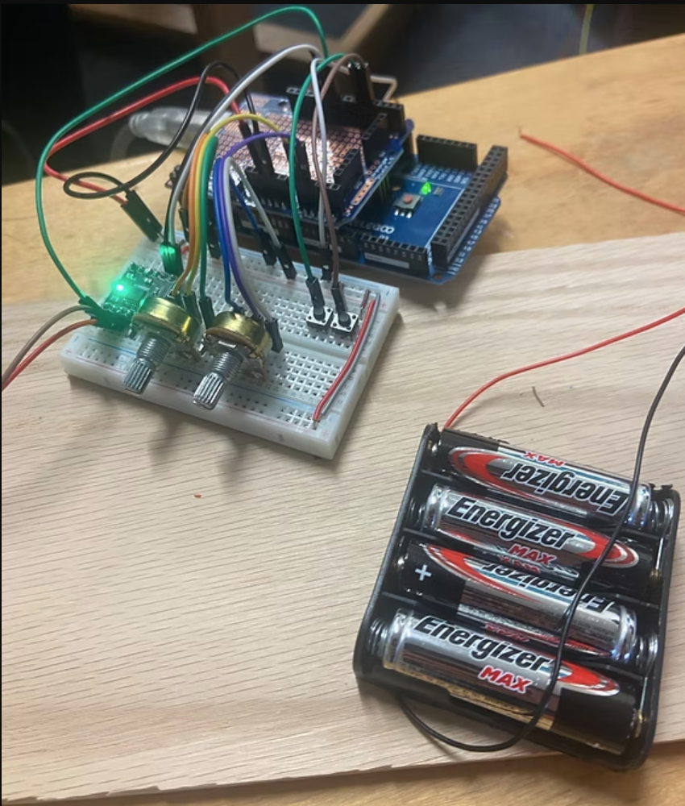
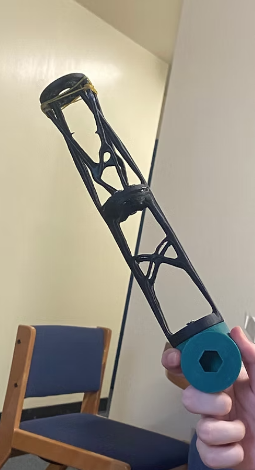

EMBEDDED SYSTEMS, 3D PRINTING, PRODUCT DESIGN
Krystal Klear
The goal of this project was to design and create a product for a client with a disability that would improve their day-to-day life. Our client, Kim, had mobility issues while sitting in here wheelchair that prevented her from changing her head position. We decided to so solve this issue using a robotic mirror arm that we call Krystal Klear.

Overview
This robotic arm can be mounted to the wheelchair for a user with movement disability. The robotic arm is able to fully retract when not in use. To control the angle of the mirror, the joystick can be used.
Design
Orignial sketches and CAD models of the design


Miror Gimbal
Using the mirror gimabl, Kim is able to have full control of any angle she wants, she's able to position the mirror to see objects that are far to her right, directly behind her, and even on the ground if she happens to drop something. The gimbal was fully 3D printed and is contrlled using 2 servo motors.

Gear Box
Since our arm would be fairly heavy with the added mirror mechanism on top, our main motor would require additional torque through the use of a worm gear mechanism

Joystick
The custom joystick is fully 3D printed and uses potentiometers for the pitch and yaw. The “goalpost” style joystick is ergonomic and familiar to Kim.

Arduino Controller
The motor control for the joystick to the motors is done through an arduino using C++

Biomimicry Designed Arms
The arms themselves needed to be lightweight but also strong. We were inspired by the internal bone structure of birds, lightweight yet still durable. Our arms are built using an isotropic design that is able to withstand 20 lbs of force in one direction.
